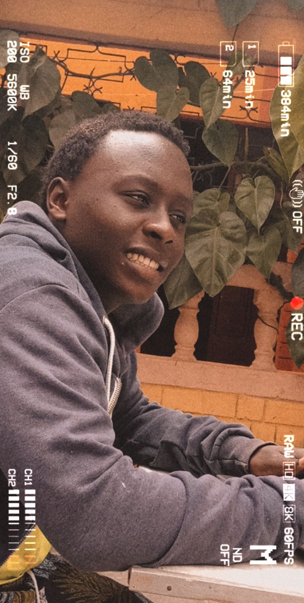

RYAN WARUI MWANIKI
BIO
Ryan Warui Mwaniki are my official names. Born in 2001. 
EDUCATIONAL BACKGROUND
When speaking of the topic of who a person is and their past, a massive part of this includes their educational background. Isn’t this what forms people, their education? Of course, this doesn’t always have to refer to their organized education. Everything that a person learns is something that educates them; these words being synonymous. Even something like first learning to tie your shoes is a part of your education. Which method works better for you: loop, swoop, and pull, or bunny ears? I of course, like any other well educated person, use loop, swoop, and pull; it’s just the best way, no bias has ever developed there. I started out as a twinkle in my father’s eye in the fall of 2001, and then on that fateful day of May 4, 2001 I was born in the big city of Nairobi. Coming into a world of beauty and ruggedness, I soon learned how to interact with the things around me. Never being a small person, smash and grab always seemed to be a good theory for whatever activity I pursued. Even though I may have got a few small scrapes and such along the way, I never did lose my speed and intensity. This is still how I do it - fast and efficiently - always quick to get bored. Coming from the city, you learn a lot about self-reliance and prioritization. It started out with parents that were always interested in education, mine and their own, whenever I learned something new; they were always interested in it also. I was taught from the beginning much about the things around me, outdoors and in. I was enrolled in Josu Academy where I completed my eight years of primary education.
The teachers taught me well, while my peers taught me more about life. I made my best friends in primary school and we are a family now. I cherished the time I spent in primary school. I was a top student who was doing well, had many friends, and was making a name for myself in sports and extracurricular activities. Then once again graduation rolled around and I had to leave all of the good things behind. But I was ready to embark on an education that was more geared towards my future. High school was an easy transaction. I was enrolled in Kagumo Boys High School. I felt like I had the education and maturity level of a young adult. I knew I could handle all of the work and stress that was going to be dealt out in my classes. I noticed that high school was a lot like middle school and that I could handle the schedule. I finally graduated in 2019 attaining my Kenya Certificate of Secondary Eduaction.
Hobbies
I remember when I was younger it never cross my mind to be a Computer gurru.All the hacking and the sophisticated coding really caught my eye especially since i was a movie fanatic. First, during my senior year in high school, i chose computer studies and i could teach my fellow students simple computer tricks that would blow their mind away.
Photography is sort of a part time field i would pursue in the future. Below are some of the photos that might display my photography skills;

Family
I really treasure family in my life , from the basic nucleur to the extended family. My parents have really sacrificed a big deal for me and my little bro. During the holidays we opt to meet up with our extended family to catch up and keep in touch.